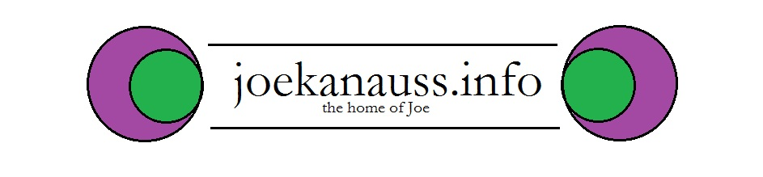

Joseph Kanauss
CSS 3 Features
Word-wrap: The “word-wrap” property of CSS3 allows long words to be able to be broken and wrapped onto a separate line, allowing it to stay within a border.
*Word-Break: The “word-break” property allows for setting line break rules, whether a hyphen is included before the line break or not.
Lor-em ips-um dol-or sit a-met, co-nse-ctetur adipis-cing elit. Ma-ece-nas sit am-et elit nisi. Qui-sque sit amet lig-ula imperdiet, tem-por metus.
Text-Overflow: The “text-overflow” property allows for setting how non-displayed, overflowed content will be indicated, either clipped off at the boundary, or with an ellipsis.
Box-Shadow: The “box-shadow” property allows the ability to apply shadow to elements, color the shadow, and blur the shadow.
*Text-Shadow: The “text-shadow” property allows the ability to apply shadow to text, blur the shadow, color the shadow, and even add multiple shadows.
The quick brown fox jumped over the lazy dog.
Border-Radius: The “border-radius” allows the ability to create rounded corners on borders.
Color: The “color” property allows the ability to specify color with RGBA (Red, Green, Blue, Alpha), HSL (Hue, Saturation, Lightness), and HSLA (Hue, Saturation, Lightness, Alpha).
Opacity: The “opacity” property allows the ability to set the opacity for an RGB color value.
Linear-Gradient: The “linear-gradient” feature (used in the background property) allows the ability to easily transition from one color to another, either vertically or horizontally. Different browsers require different prefixes add to “linear-gradient”: “webkit-” (Chrome), “-moz-” (Firefox), “webkit-” (Safari), and “-o-” (Opera).
*Filter: The “filter” property allows the ability to apply a filter to an image. Filters include: blur, brightness, contrast, grayscale, hue-rotate, invert, opacity, saturate, sepia, and drop-shadow. Chrome, Safari, and Opera require the “-webkit-” prefix in front of “filter”.
